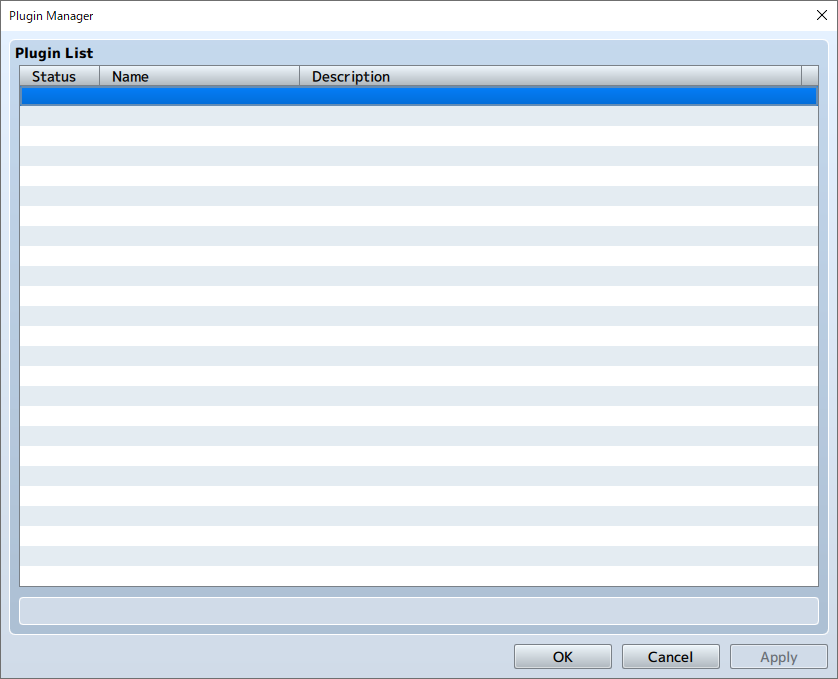
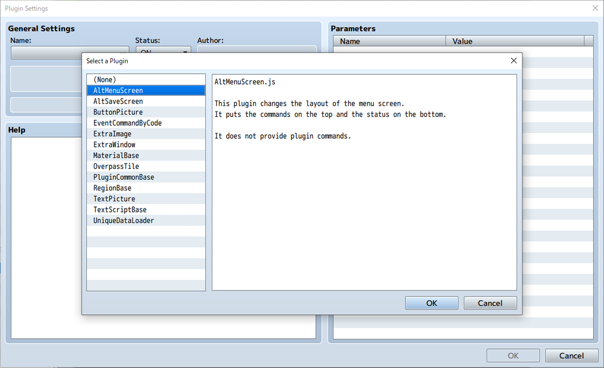
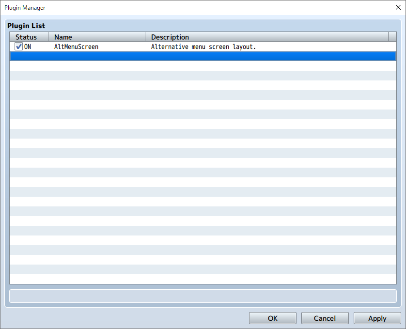
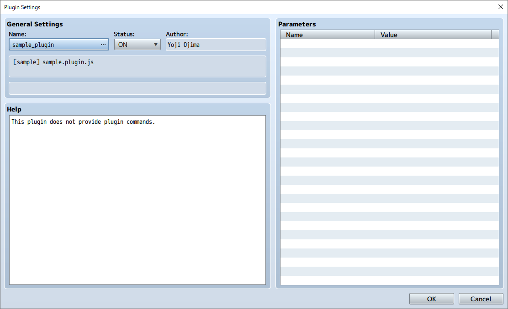
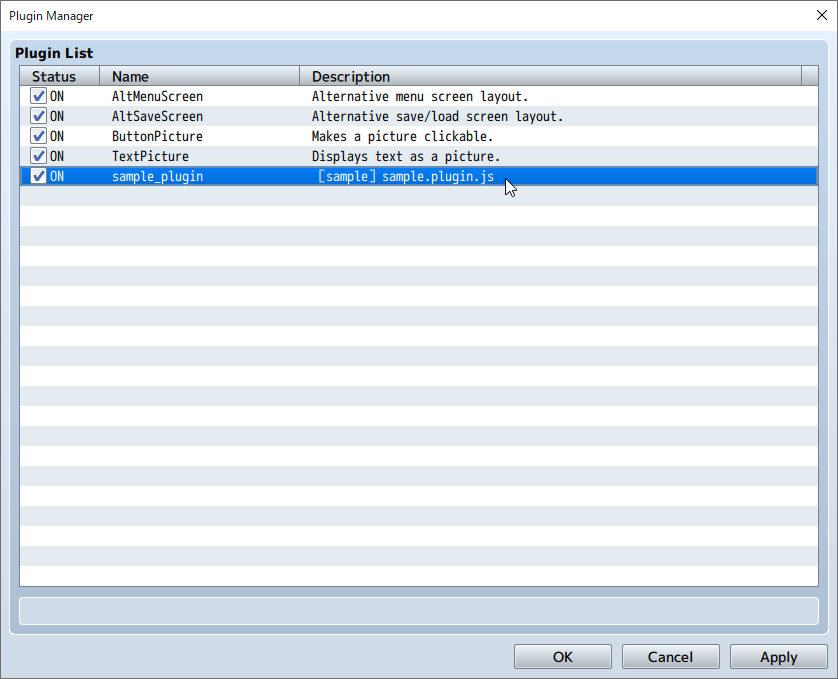

RPG MAKER MZ HELP
Documentation

Enabling Plugins
Users can find easier-to-use plugin features in RPG Maker MZ.
Enabling Plugins
Enable plugins using the [Plugin Manager] found under [Tools].
-
1. Double-click an empty row.
 -
2. Select the plugin you want to use and click the [OK] button.
 -
3. The selected plugin will appear in the list.

Enabling Unofficial Plugins
After copying the desired plugin's js file to the project's [js]→[plugins] folder, enable it using the above procedure.
-
1. Copy the desired plugin's js file to the [plugins] folder found in the project's [js] folder.

-
2. Double-click an empty row in the Plugin Manager and the name of the plugin that was added will appear when you click [Name]. Select the name and click [OK].
 -
3. The selected plugin will appear in the list.

Switch the Plugin ON/OFF
You can easily switch the plugin ON/OFF from the list screen using the check button.
Refreshing Plugins
When updating a plugin, if you select [Update] after overwriting the js file, changes to the information for parameter settings and descriptions will be reflected.
Press the Shift key to select multiple plugins and update them all at once.